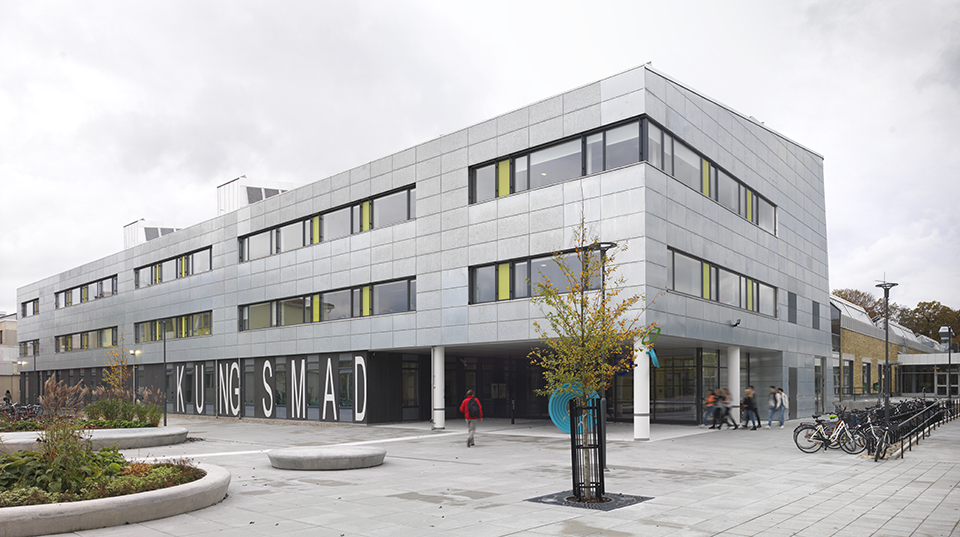

Mitt namn är Tess Henriksson och jag bor i Hovmantorp. Går mitt andra år på stylist linjen på Kungsmadskolan. Skulle beskriva mig som glad och engerifylld. På fritiden jobbar jag inom resturang och ligger hemma.
Mina intressen är hundar och hudvård. Det läggs mycket pengar på just hudvården och nya produkter. När det gäller hundar har jag 4 hundar hemma som jag älska, både att träna med dem men också att gosa.
Jag går hantverksprogrammet med inrikting stylist. Där jobbar vi med mycket inom det som har med ditt utseende att göra. Det som ingår i kursen är hår, makeup, naglar och klädstyling. Jag valde detta då jag vill ha kul i skolan och inte bara sitta och plugga framför datorn.
Mina tankar kring kusern webbutveckling är hur man skapar en hemsidan och stylar den. Detta är egentligen helt tvärtemot vad jag egentligen skulle valt men kan tänka mig att dett kan vara en hjälp till mitt UF sedan.
 kungsmadskolan